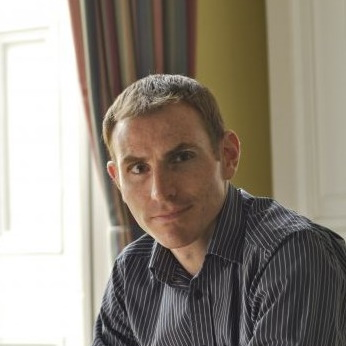

Organizing committee
| Tong Xia University of Cambridge / Tsinghua University Bio: Dr. Tong Xia is a postdoctoral research associate at the University of Cambridge, where she also received her PhD, and a visiting scholar at Tsinghua University, where she earned her master’s degree. Her research interests include machine learning for health, physiological signal modeling, and trustworthy AI. She has published in top venues such as NPJ Digital Medicine, IEEE JBHI, NeurIPS, KDD, AAAI, ICASSP, and UbiComp. She co-organized the FairComp Workshop at UbiComp 2023 and the Embodied AI Workshop at ICLR 2025. She also served as the Poster and Demo Session Chair for ACM UbiComp 2022. Since 2023, she has been co-organizing the Mobile and Wearable Health Seminar Series at the University of Cambridge and serves as an Associate Editor for Frontiers in Digital Health. |
|
| Aaqib Saeed Eindhoven University of Technology Bio: Dr. Aaqib Saeed is an Assistant Professor of On-body Sensing and Edge AI at Eindhoven University of Technology and the recipient of AiNed Fellowship Grant. Prior to his current position, he served as a Research Scientist in AI at Philips Research. His research interests include deep learning, self-supervision, federated learning, and audio understanding for personal health. He received his Ph.D. cum laude from Eindhoven University of Technology. His work has resulted in publications in ICLR, ACM IMWUT, ACM TECS, NeurIPS, ICASSP, and Interspeech. He has previously co-organized academic events like HC-SSL and HCRL workshops at AAAI 2022 and 2024. |
|
 |
Cecilia Mascolo Google / University of Cambridge Bio: Dr. Dimitris Spathis is a Research Scientist at Google and a visiting researcher at the University of Cambridge, where he completed his PhD. He was previously a Senior Research Scientist at Nokia Bell Labs and interned at Microsoft Research, Telefonica, and Ocado. His research enables machine learning to handle complex real-world data efficiently, with a particular interest in health sensing. In 2020, he helped start one of the largest studies in audio AI for health (covid-19-sounds.org). His research has been published in top venues including NeurIPS, KDD, Nature Digital Medicine, UbiComp, and ICASSP, while findings have been featured in international media such as the New York Times, BBC, CNN, Guardian, Washington Post, Forbes, and Financial Times. He has organized and spoken at workshops at AAAI and UbiComp. He also serves on the committees of major conferences and the editorial boards of Nature Digital Medicine and IEEE Pervasive Computing. |
| Robert Harle Google / University of Cambridge Bio:Prof. Robert Harle is a professor at the University of Cambridge and a research scientist at Google. His research interests are related to all forms of sensing, but particularly in areas where mobile and wearable systems are involved. He has published extensively in the fields of indoor positioning, context-awareness, and ubiquitous computing. |
|
| Cecilia Mascolo University of Cambridge Bio: Prof. Cecilia Mascolo is a Professor of Mobile Systems in the Department of Computer Science and Technology at the University of Cambridge, UK, and a visiting professor at the Harvard T.H. Chan School of Public Health, Harvard University, US. She is the Director of the Centre for Mobile, Wearable Systems and Augmented Intelligence. She holds a PhD from the University of Bologna. Her research interests lie in mobile systems and machine learning for mobile and wearable health applications. She has published in numerous top-tier conferences and journals in these areas, and her experience as a principal investigator spans projects funded by research councils and industry. In recognition of her significant contributions to health computing, she was named a 2024 ACM Distinguished Member. Professor Mascolo has served on the steering, organizing, and program committees of leading conferences in mobile and sensor systems, signal processing, and machine learning, including ACM MobiSys, ACM SenSys, and ACM UbiComp. She will serve as the General Chair of ACM MobiSys 2026. |
|
 |
Robert Harle Google / University of Cambridge Bio: Prof. Robert Harle is the lead for the London segment of Google's consumer health research team (formerly Fitbit Research). He started his career as an academic at the University of Cambridge, where he is still a Professor of Mobile and Cyberphysical Systems. He has a keen interest in the use of technology to aid health, performance and wellbeing. Within Google his team works on activity-related sensing and algorithms for wearables (primarily) but also across the portfolio of Google hardware products. His team is known for applying advanced machine learning techniques to derive accurate measurements and meaning from wearables data. Recent launches include the new heart rate algorithm for Google's Pixel Watch, achieving Fitbit's most accurate heart rate tracking at rest and during exercise. |